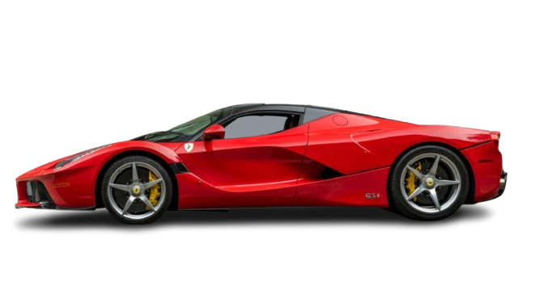

A Legendary Timeline
Ferrari Evolution
Four cars. One design legacy. Scroll to move from classic sculpted racing lines to the hybrid hypercar era.
Scroll

1962
The classic grand tourer era — low roofline, long bonnet, rounded bodywork, and
unmistakable racing heritage.
FERRARI
250 GTO

1987
Sharper, harder, more aggressive. The F40 turns Ferrari form into pure speed,
with a wedge silhouette and iconic rear wing.
FERRARI
F40

2002
Ferrari design enters the Formula 1 age: angular airflow channels, a dramatic
nose, and a body shaped by performance science.
FERRARI
Enzo

2013
The car becomes fluid again: lower, cleaner, and more sculpted, whilst entering
entering Ferrari’s first hybrid hypercar chapter.
FERRARI
LaFerrari
Past to Future
The Line Keeps Moving
Classic racer. Turbo icon. F1-inspired supercar. Hybrid flagship.